Что поменялось в облике стола: слева — как было, справа — как стало. Сверху самое свежее. Всё уже на сайте, смотреть можно и вживую.
← За столБыло: слева и справа по 300 пикселей всегда. Игрок, пришедший без персонажа, смотрел на пустую колонку с одной серой строкой.
Стало: между панелью и полем узкая полоска-ручка «‹» — нажал, и панель сложилась, поле стало шире на 300 пикселей (проверено: 852 → 1152). Выбор помнится после перезахода. Если у игрока листа нет, левая панель просто не появляется.
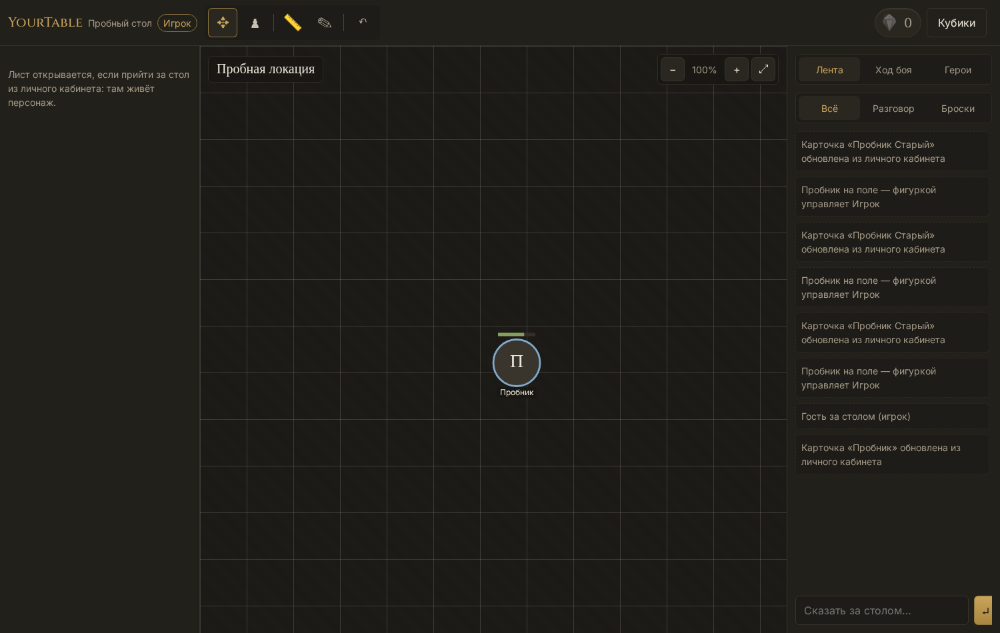
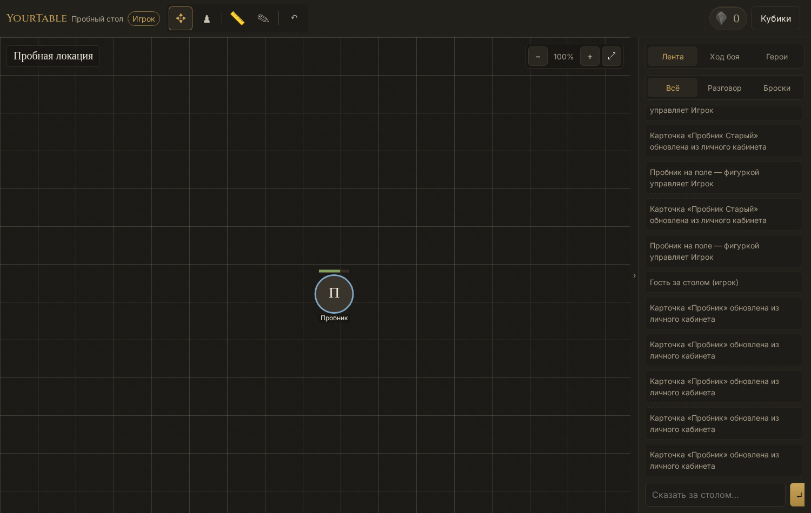
Было: «+ Новая локация» неотличима от всего остального. В строке — тёмный квадратик 40×32 и три значка по 16 пикселей подряд, крестик вплотную к остальным: промахнуться и стереть локацию легко.
Стало: «+ Новая локация» — единственная золотая кнопка панели, её видно сразу. Превью карты крупнее (48×34), кнопки строки по 28 пикселей с подсветкой, а удаление отбито отступом и краснеет под курсором.
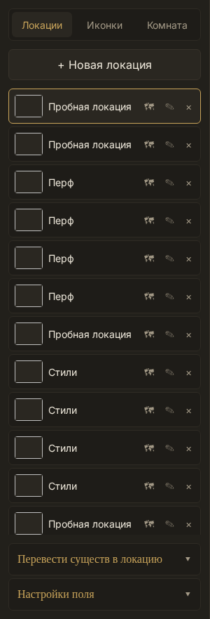
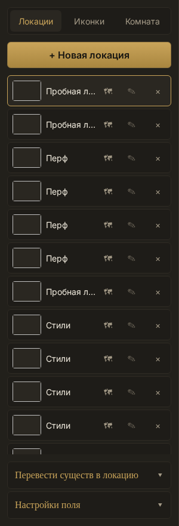
Было: три ряда управления над сеткой — кнопка загрузки, отдельный список «Персонаж / НПС / Враг» и фильтр. Вид новой иконки жил в одном месте, а показ — в другом.
Стало: списка нет. Вид берётся из выбранной вкладки, и это написано на самой кнопке: на «Врагах» она говорит «+ Враги», на «Все» — «+ Иконки» (заводит персонажа, как и раньше). Кнопка стала золотой — она тут главная.
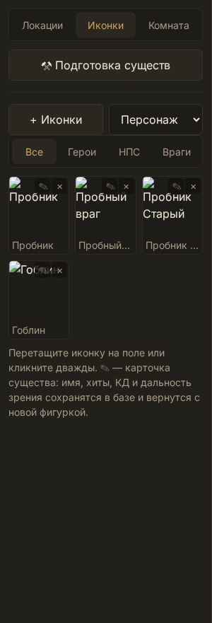
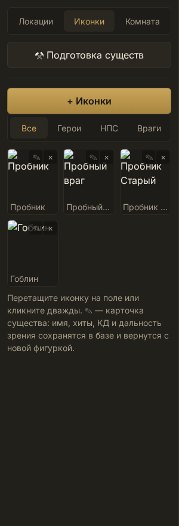
Было: четыре одинаковые серые кнопки в шапке. Слева «Выбранный персонаж — не выбран», хотя лист открыт, и две кнопки подряд. В шапке листа подписи «Уровень Вдохновение Раса» слипались, пустые поля молчали.
Стало: «+ Новый персонаж» золотая, фон, экспорт и импорт спрятаны под «⋯». Открытый лист и есть выбранный — блок называется «За стол пойдёт» и показывает его сразу, кнопка осталась одна. Подписи в шапке разошлись, а в пустых полях появились подсказки: «человек», «законно-добрый», «кто играет».
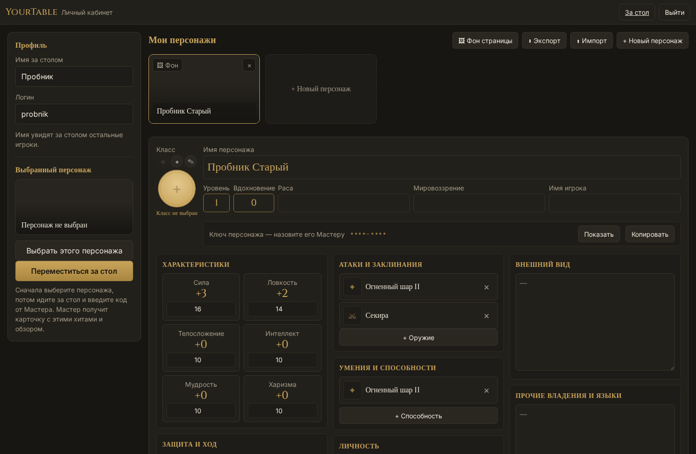
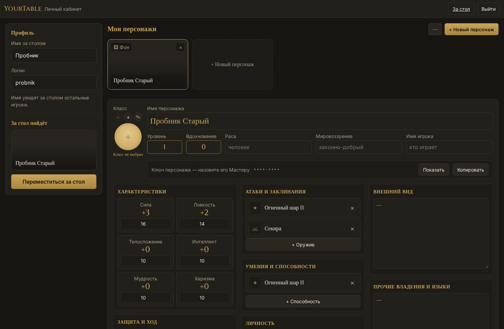
Было: вкладка звалась «Листы игроков», заголовок — «Персонажи игроков», а форма ввода ключа жалась в левый верхний угол пустой страницы. Ссылки в кабинет не было.
Стало: везде одно имя — «Листы персонажей». Пока ни одного листа нет, ввод ключа стоит посередине экрана, как окно входа. В шапке появилась ссылка «Кабинет».
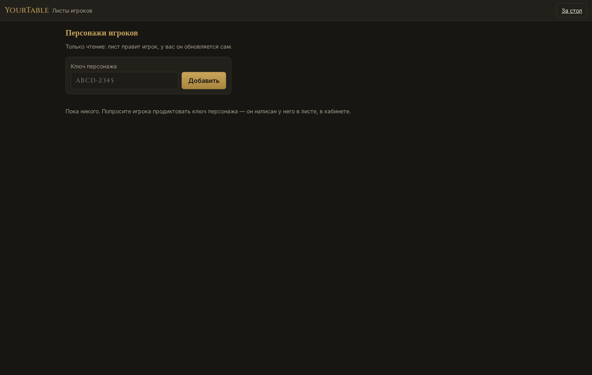
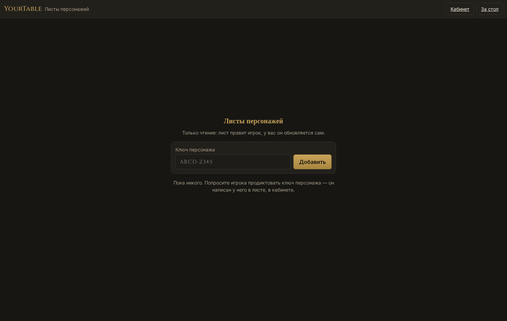
Было: «Административная комната» не влезала в карточку и переносилась на две строки.
Стало: карточка чуть шире, заголовок мельче — название встало в строку.
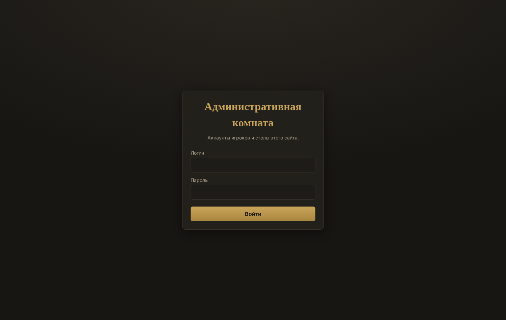
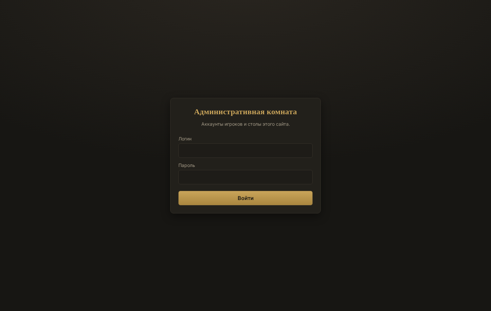
Было: значки 20 пикселей, тусклые, все восемь одной слипшейся лентой; активный отличался только цветом, отмена терялась среди режимов.
Стало: значки крупнее (24 пикселя) и светлее, разделители по смыслу — движение · линейка и рисование · мастерское · отмена. У выбранного инструмента золотая обводка, под курсором подсветка.
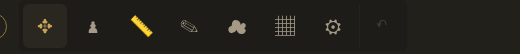
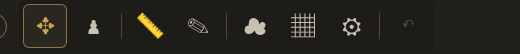
Было: восемь полей столбиком, «В бой (d20)» понятно только знающему, «Удалить» такой же кнопкой, как и остальные.
Стало: КД и размер встали в один ряд, карточка короче. Кнопка занимает строку и называется «Бросить инициативу», «Удалить» приглушена и краснеет только под курсором. Хиты оставлены двумя окошками — как и просили.
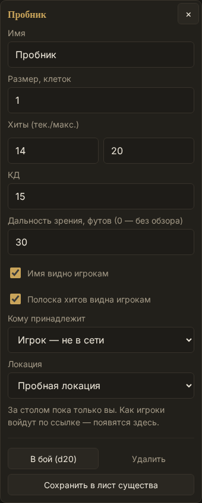
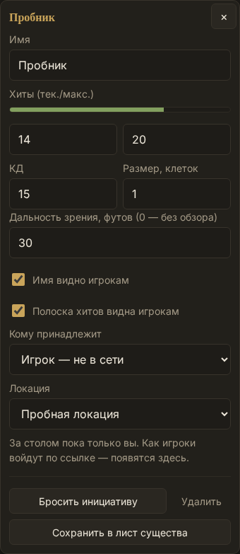
Было: числа шли столбиком одно под другим, карточка тянулась на две высоты экрана.
Стало: КД и размер в паре, подпись обзора короче — карточка стала ниже, получаемый урон и спасброски видно сразу, без прокрутки.
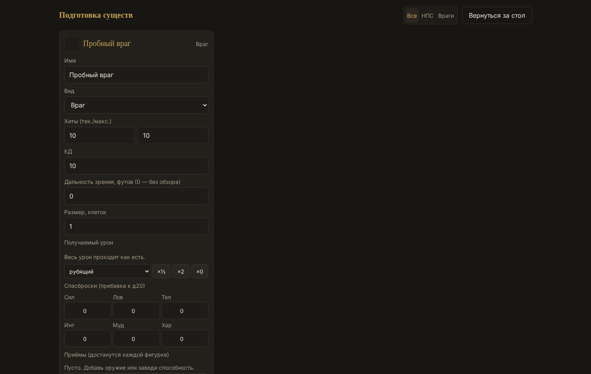
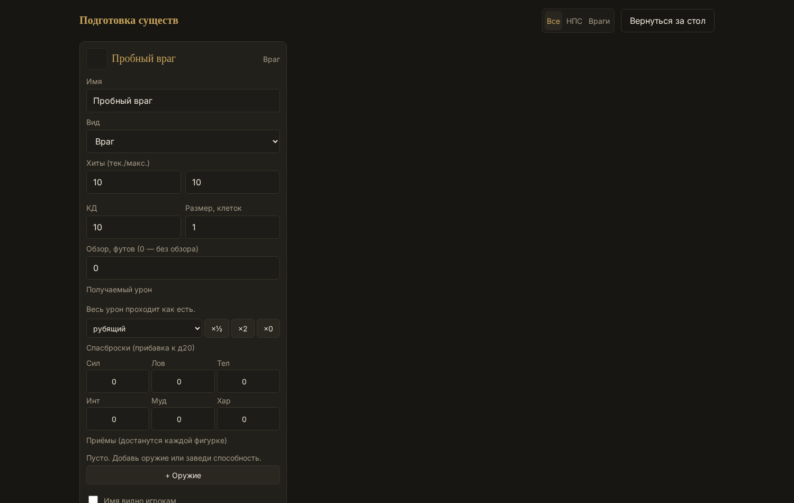